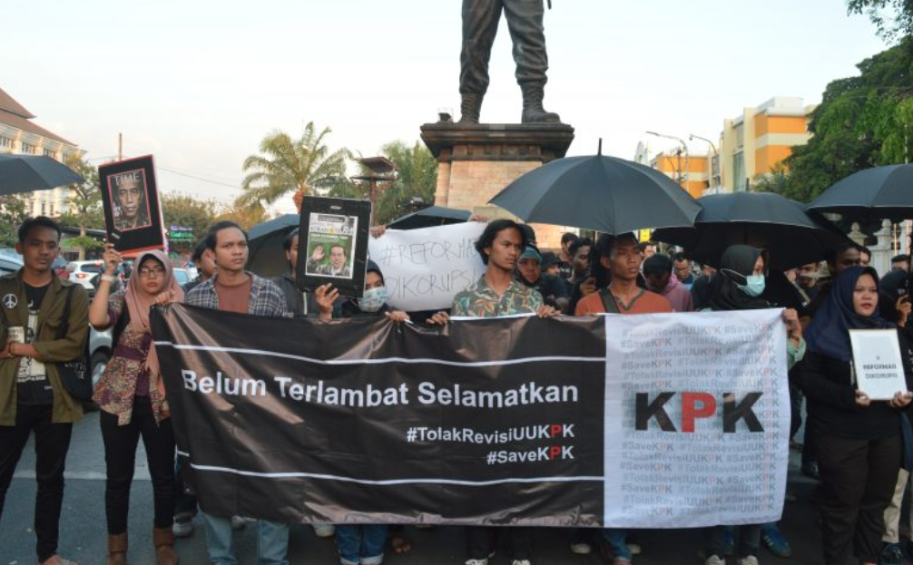

Aksi Demontrasi Reformasi di Korupsi
Pengertian smart mobs
“Smart mob adalah kelompok sosial yang tindakannya dikoordinasikan dalam waktu yang sama dengan tujuan tertentu, dengan bantuan teknologi informasi dan komunikasi. Konsep smart mob diperkenalkan oleh Howard Rheingold dalam buku Smart Mobs: The Next Social Revolution yang diterbitkan pada tahun 2002.”
Latar Belakang
Pada tanggal 23-30 September 2019, tepat 5 tahun yang lalu, gedung DPR RI menjadi saksi bisu terjadinya aksi bertajuk #ReformasiDikorupsi. Aksi ini merupakan seruan mahasiswa setelah reformasi tahun 1998. Pada demonstrasi tersebut, mahasiswa dari berbagai penjuru berkumpul dan menyatukan tekad untuk menuntut pembatalan revisi Undang-Undang Komisi Pemberantasan Korupsi (UU KPK) serta menolak pengesahan rancangan undang-undang (RUU) yang dianggap bermasalah.
Mosi tidak Percaya kepada DPR
Pada tanggal 23-30 September 2019, tepat 5 tahun yang lalu, gedung DPR RI menjadi saksi bisu
terjadinya aksi bertajuk #ReformasiDikorupsi. Aksi ini merupakan seruan mahasiswa setelah
reformasi tahun 1998. Pada demonstrasi tersebut, mahasiswa dari berbagai penjuru berkumpul
dan menyatukan tekad untuk menuntut pembatalan revisi Undang-Undang Komisi Pemberantasan
Korupsi (UU KPK) serta menolak pengesahan rancangan undang-undang (RUU) yang dianggap
bermasalah.
Namun, semua masukan dari publik tersebut tidak digubris. Bahkan, anggota DPR meremehkan
suara mahasiswa dengan menolak untuk menemui massa mahasiswa yang menggelar aksi damai pada
Kamis, 19 September 2019.Tak heran jika kemarahan mahasiswa akhirnya memuncak. Protes tidak
hanya terjadi di jalanan, tetapi juga disampaikan melalui media sosial dengan tagar
#ReformasiDikorupsi yang ramai digunakan di berbagai platform.
Kronologi : Menjadi aksi nasional dan di warnai kerusuhan
Awalnya, aksi #ReformasiDikorupsi hanya terjadi di Jakarta, namun kemudian berkembang menjadi aksi nasional. Serangkaian aksi yang berlangsung dari tanggal 23-30 September 2019 ini terjadi di berbagai kota besar di Indonesia, seperti Malang, Surabaya, Yogyakarta, Makassar, Palembang, Medan, Semarang, Bandung, Denpasar, Kendari, Tarakan, Samarinda, Banda Aceh, dan Palu. Aksi nasional tersebut juga mengangkat tujuh tuntutan.
Tujuh Poin Tuntutan Demonstran
- Cabut dan kaji ulang RKUHP, RUU Pertambangan Minerba, RUU Pertahanan, RUU Permasyarakatan, RUU Ketenagakerjaan, dan RUU Sumber Daya Air (SDA); Terbitkan Perppu KPK; Sahkan RUU Penghapusan Kekerasan Seksual (PKS) dan RUU Perlindungan Pekerja Rumah Tangga (PRT).
- Batalkan pimpinan KPK bermasalah pilihan DPR.
- Tolak TNI-Polri menempati jabatan sipil.
- Hentikan militerisme di Papua dan daerah lain; Bebaskan tahanan politik Papua segera; Buka akses jurnalis di Tanah Papua.
- Hentikan kriminalisasi aktivis dan jurnalis.
- Hentikan pembakaran hutan serta cabut izin perusahaan pelakunya.
- Usut pelanggaran HAM; Adili pejabat HAM yang duduk di lingkaran kekuasaan; Pulihkan hak-hak korban secepatnya.
Rangkaian aksi tersebut pun diwarnai kericuhan antara aparat dan para demonstran. Banyak video yang beredar di media sosial menunjukkan dengan jelas polisi melayangkan pukulan, tendangan, dan benda tumpul ke arah demonstran yang sudah tidak berdaya.
Korban dari aksi Demonstran
Dari aksi tersebut, banyak korban yang muncul akibat tindakan represif aparat. Di Jakarta, sekitar 90 demonstran dilarikan ke Rumah Sakit Pusat Pertamina (RSPP), di mana tiga di antaranya mengalami luka serius yang membutuhkan perawatan intensif. KONTRAS melaporkan bahwa aksi kebrutalan tersebut menyebabkan lima orang massa aksi meninggal dunia, di antaranya Immawan Randi, Yusuf Kardawi (mahasiswa Universitas Halu Oleo), Maulana Suryadi (pemuda asal Tanah Abang), serta dua pelajar, Akbar Alamsyah dan Bagus Putra Mahendra.
Penyelesaian
Akibat dari kekerasan tersebut, mahasiswa dan buruh memberikan satu tuntutan tambahan, yaitu pemerintah harus bertanggung jawab atas korban luka dan meninggal dalam aksi pada tanggal 23-30 September 2019 serta aktivis pro-demokrasi yang dikriminalisasi. Mereka menuntut pembentukan tim penyelidikan independen di bawah naungan KOMNAS HAM.
Pesan

Cita-cita reformasi salah satunya adalah pemberantasan korupsi. Melakukan pemberantasan korupsi menjadi tanggung jawab seluruh elemen bangsa. Dalam konteks ini, para demonstran telah memperjuangkan salah satu cita-cita reformasi dengan menolak pengesahan revisi UU KPK. Namun, aksi demonstrasi mereka tidak didengar dan malah mendapat kekerasan dari aparat. Padahal, pemerintah dan DPR harus mendengarkan aspirasi rakyat sebagai perwujudan demokrasi, dan menyampaikan pendapat di muka umum adalah hak konstitusional setiap warga negara tanpa terkecuali. Oleh karena itu, tugas pemerintah dan negara adalah menjamin tercapainya pemberantasan korupsi yang optimal, memperkuat KPK, serta pembuatan dan penegakan hukum yang adil, yang menghormati kebebasan menyampaikan pendapat bagi seluruh warga negara Indonesia tanpa terkecuali.
Referensi, Terima Kasih kepada :
-
nasional.kompas.com
-
Bem Rema
Bachtiar, H., & Mahfud, A. (2020). Reformasi Dikorupsi: Protes Mahasiswa dan Rakyat 2019 Melawan Pelemahan KPK. Jurnal Sosial Politik, 6(2), 129-146.
Setara Institute. (2019). Laporan Reformasi Dikorupsi: Analisis Aksi Mahasiswa September 2019. Jakarta: Setara Institute.
Yusuf, A. (2019). Protes ‘Reformasi Dikorupsi’: Mobilisasi Mahasiswa dan Dampaknya pada Politik Indonesia. Indonesian Political Review, 4(2), 187-205